청산도한달살이
슬로시티로서의 청산도
청산도는 슬로시티로서 '느리지만 멋진 삶'을 추구하며, 환경과 자연을 존중하는 삶을 이어가고 있습니다.
靑山八景(청산팔경)
단순한 경관이 아닌, 자연 속에 담긴 역사·문화·철학·삶의 깨달음을 담은 시적 은유의 표현.
슬로우시티
청산도
바쁜 일상에서 벗어나 자연 속에서
쉼과 치유를 경험할 수 있는 곳입니다.
청산도는 슬로시티로서 '느리지만 멋진 삶'을 추구하며, 환경과 자연을 존중하는 삶을 이어가고 있습니다.
단순한 경관이 아닌, 자연 속에 담긴 역사·문화·철학·삶의 깨달음을 담은 시적 은유의 표현.
바쁜 일상에서 벗어나 자연 속에서
쉼과 치유를 경험할 수 있는 곳입니다.